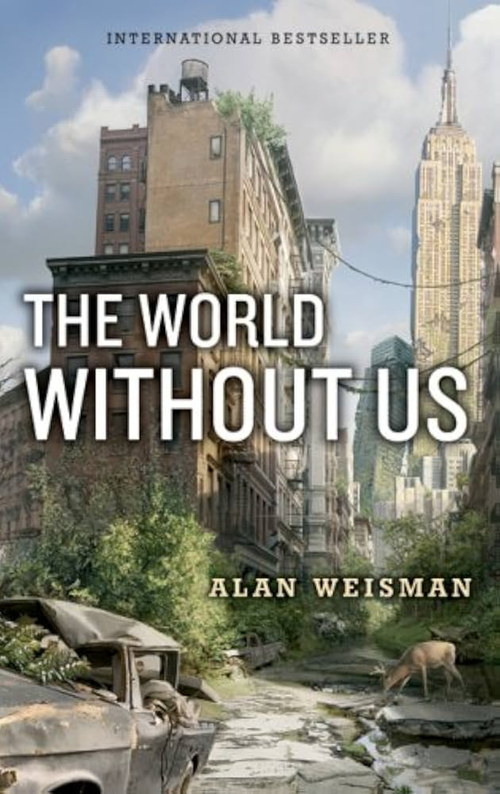

📖《没有我们的世界》是一部独特的环境科普著作，设想人类突然消失后地球的命运。记者韦斯曼采访了各领域专家，从工程、生态、地质等角度推演人类的遗产将如何演变。
从城市如何被植被吞噬，到塑料垃圾的命运，再到核废料的漫长衰变，这本书以独特的视角审视人类文明的脆弱与自然的韧性。
这本书的视角非常独特：不是预测人类如何灭亡，而是假设人类突然消失后，地球会发生什么。这个思想实验揭示了很多平时被忽视的真相。
最让我震撼的是关于城市命运的部分。我们以为混凝土建筑坚不可摧，但在没有人类维护的情况下，纽约的地铁系统只需36小时就会被洪水淹没，摩天大楼会在几十年内被植被和风雨侵蚀。人类引以为傲的文明，在大自然面前如此脆弱。
更令人深思的是人类遗产的持久性。塑料可能存在数千年，核废料的放射性将持续数十万年，而我们建造的大坝将改变河流走向数个世纪。即使人类消失，我们仍在以某种方式"存在"着。这让我重新思考"环保"的意义——不是拯救地球，地球不需要拯救，真正需要拯救的是我们自己。
这本书不是环保主义的说教，而是冷静的科学推演。读完之后，对人类在地球上的位置会有全新的认识。